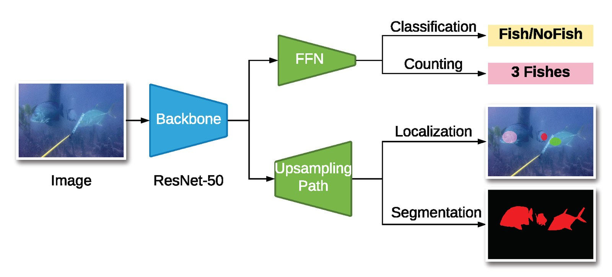
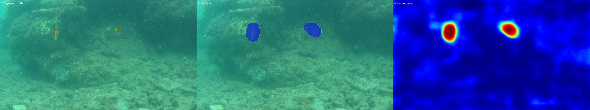
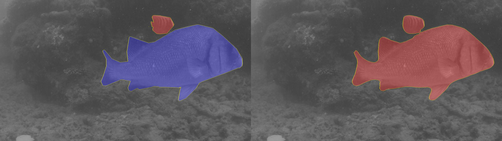

Fish in the conditions they actually live in
Most underwater datasets are filmed in clear water with a few, well-lit fish. DeepFish comes from remote coastal habitats of tropical Australia: turbid mangroves, seagrass beds and reefs, where fish are small, partly hidden and often absent.
Cameras mounted on metal frames were lowered from a vessel to the seabed and left to record the natural fish community while the vessel kept 100 m away. Depth and GPS position were logged for each deployment. Filming was done in daylight during periods of relatively low turbidity, in full HD.
The footage originally came with classification labels only. We added point-level and segmentation annotations, making DeepFish a benchmark for four tasks.
One dataset, four benchmarks
| Task | Annotation | Images |
|---|---|---|
| Classification | Whether the frame contains a fish | 39,766 |
| Counting | Number of fish in the frame, from point labels | 3,200 |
| Localization | A point on every fish | 3,200 |
| Segmentation | Pixel-level fish masks | 620 |



Twenty habitats, from reef to mangrove
Frames per habitat in the classification set, split into frames with and without fish. More than half of all frames contain no fish, as in real survey footage.
| Habitat | Frames | With fish | Distribution |
|---|---|---|---|
| Total | 39,766 | 17,409 |
Get the data
The dataset is a single 7.1 GB archive. The Hugging Face mirror is fastest from anywhere in the world, and interrupted downloads resume when you rerun the command.
pip install -U huggingface_hub hf download Alzayats/DeepFish DeepFish.tar DeepFish.tar.sha256 --repo-type dataset --local-dir . sha256sum -c DeepFish.tar.sha256 tar xf DeepFish.tar
Training and evaluation code for all four tasks is on GitHub.
Cite DeepFish
If you use the dataset, please cite the paper:
@article{saleh2020realistic,
title = {A realistic fish-habitat dataset to evaluate algorithms for underwater visual analysis},
author = {Saleh, Alzayat and Laradji, Issam H and Konovalov, Dmitry A and Bradley, Michael and Vazquez, David and Sheaves, Marcus},
journal = {Scientific Reports},
volume = {10},
number = {1},
pages = {14671},
year = {2020},
publisher = {Nature Publishing Group UK London},
doi = {10.1038/s41598-020-71639-x}
}